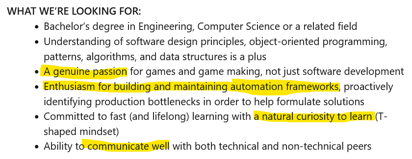
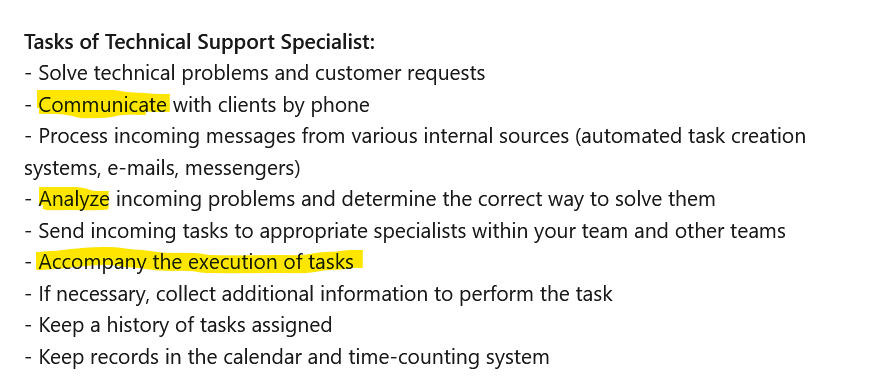
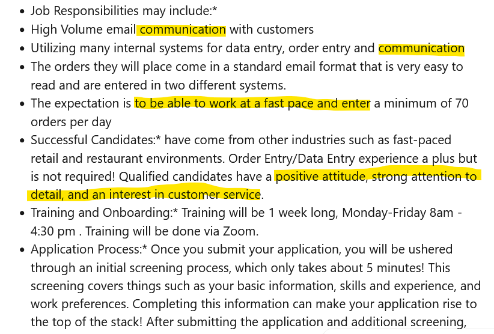

Top 7 soft skills to land IT job
Today I want to share a list of 7 skills that I think are the most important in IT. This article is dedicated specifically to soft skills. I also plan to publish an article in the top hard skills. So, keep following.
1. Communication
To address technology problems and help your coworkers and bosses better utilize their technological resources, you must be an effective communicator as an IT professional. You must be able to work well in teams and effectively express your ideas to coworkers if you are a developer or work in IT security. Email communication will probably play a significant role in your profession, as almost all IT jobs require solid communication skills, both verbal and written. Contrary to popular belief, the realm of technology is not a solitary one.
2. Skills in analysis
Being analytical provides you a significant advantage in the IT industry, as you're constantly expected to come up with logical answers to issues. You can identify and resolve technical challenges with analytical skills. They make it possible for you to accomplish things like determine why a line of code isn't producing the expected output or why a server isn't responding. If you have an analytical mind, you might even foresee issues before they happen or you might feel forced to disassemble things in order to understand how they operate. If so, you're probably on your way to becoming an IT professional.
Linkedin Requirements Example
3. Creativity
Even though it isn't a declared prerequisite for all IT positions, creativity is a beneficial skill in many of them. Tech billionaires like Steve Jobs and Mark Zuckerberg never would have developed their ground-breaking goods and innovative ideas if they weren't creative. Even if you don't want to succeed Bill Gates, your tech employment will probably ask you to come up with suggestions to enhance procedures or goods or to assist coworkers in coming up with creative remedies to their technological issues. In fact, one of the key qualifications for today's IT positions is the capacity to creatively apply technology to meet a specific business need or develop a solution that advances the organization.
4. Organization
You are more effective and productive at work if you are organized. Many IT occupations are dynamic, allowing you to switch between a variety of projects and duties. Having the ability to multitask effectively is a valuable skill, but only if you are well-organized. Being able to chunk and prioritize your daily responsibilities effectively is just as important as being able to keep track of things like your schedule and to-do lists. Your job in the technology industry may be easier for you to handle if organization and time management are your strong suits.
Linkedin Requirements Example
5. Project Management
It's likely that you'll be managing several tasks and projects as an IT professional, so your ability to stick to deadlines and achieve goals is essential. Making sound planning, setting and achieving goals, and collaborating with others to address problems are all essential components of effective project management. If you have a natural talent for project management, you'd be a fantastic fit for many IT jobs. If you wish to advance to a leadership role, having honed project management abilities will offer you an advantage. Being able to successfully complete tasks with the assistance of coworkers might get you praise from superiors and put you on the short list for promotions into jobs with greater responsibility.

6. Solving issues
Do you enjoy figuring out puzzles? As previously stated, one of the best careers for problem solving is in IT. Have you ever enjoyed spending hours attempting to determine why your laptop, printer, or phone isn't performing as you would like it to? You could thrive in a profession in information technology. Since many of the technical skills required for a variety of IT occupations may be learned via experimentation and trial and error, you'll need problem-solving capabilities to get started in the industry.
Linkedin Requirements Example
7. A desire to help others
A significant portion of almost every technology job involves helping people, whether you're developing new technology that makes people's lives easier or assisting them in finding ways around technology obstacles. Although IT isn't traditionally thought of as a "helping" field like medicine or social work, Some of the finest occupations for those who want to serve others are in information technology.
This was my list. Of course, it can be appended, but according to my experience and background, these skills are enough to make an outstanding career in IT.
I hope it was helpful. Thank you!